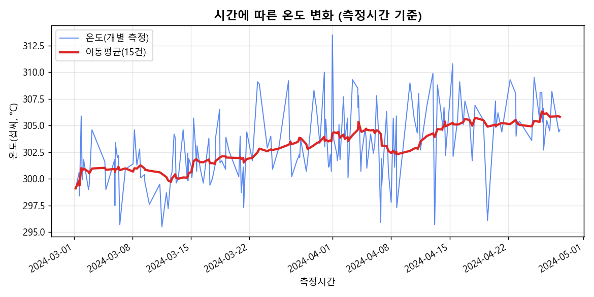
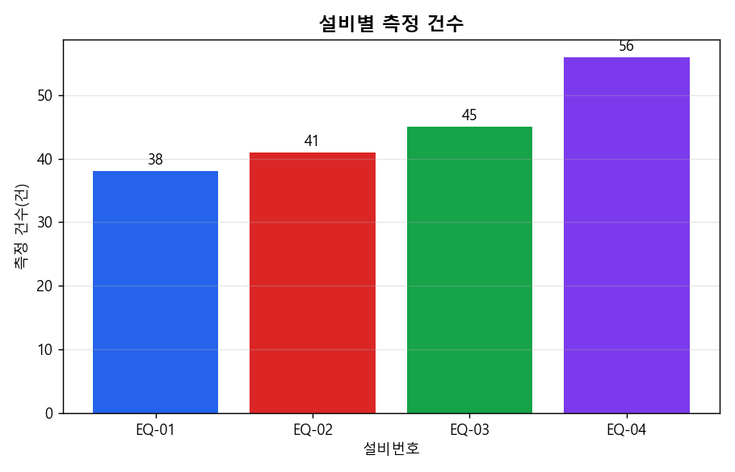
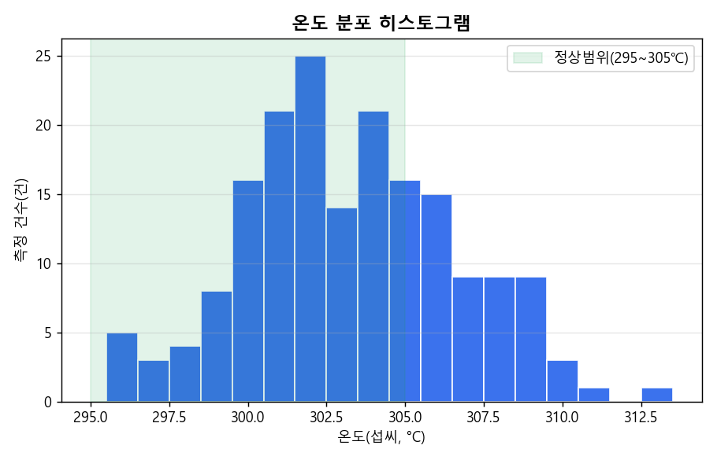
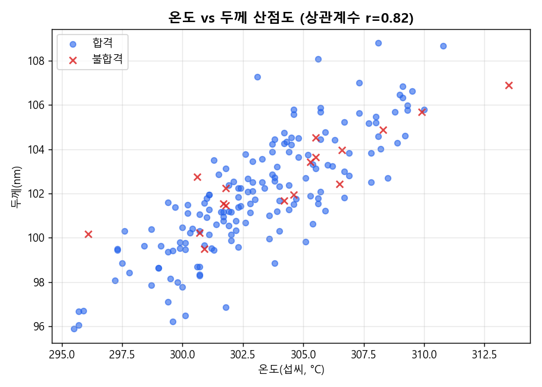

pd.read_csv()로 파일을 읽고,
측정시간 열을 pd.to_datetime()으로 변환한다.💬 오늘의 질문: "표만 보고도 이상을 알 수 있을까, 그림으로 보면 무엇이 달라질까?"
dropna(), fillna()로
정리하고, 정제 전후 평균값이 어떻게 달라지는지 비교했다. 오늘은 이렇게 "정리된 데이터"를
숫자표가 아니라 그림(그래프)으로 바꿔서 보는 방법을 배운다. 같은 숫자라도 표로 볼 때와
그래프로 볼 때 눈에 들어오는 정보가 크게 다르다.
숫자 180개가 나열된 표를 눈으로 훑어서 "어느 설비의 온도가 가장 들쭉날쭉한가?"를 바로 답하기는 어렵다. 하지만 같은 데이터를 그래프로 그리면 패턴이 한눈에 보인다. 이번 시간에는 5가지 기본 그래프 — 선 그래프, 막대그래프, 히스토그램, 산점도, 박스플롯 — 를 실제 공정 데이터로 직접 그려보고, 각 그래프가 "어떤 질문에 답하기 좋은지"를 익힌다.
선 그래프는 시간처럼 순서가 있는 값이 어떻게 변하는지 볼 때 사용한다. x축에 시간, y축에 측정값을 놓고 점들을 순서대로 선으로 이으면, 값이 오르는지 내리는지 "흐름"을 파악할 수 있다.
막대그래프는 범주(카테고리)별 개수나 크기를 비교할 때 사용한다. 막대의 길이(높이)로 크기를 비교하기 때문에, 범주 간 차이를 직관적으로 볼 수 있다.
히스토그램은 숫자 값이 어떤 구간에 얼마나 몰려 있는지(분포)를 볼 때 사용한다. 막대그래프와 생김새는 비슷하지만, x축이 범주가 아니라 "구간(bin)"이라는 점이 다르다.
산점도는 두 숫자 변수 사이에 관계가 있는지 볼 때 사용한다. x축과 y축에 서로 다른 두 변수를 놓고, 각 관측값을 점 하나로 찍는다.
박스플롯은 그룹별로 값이 얼마나 퍼져 있는지(분산)를 한눈에 비교할 때 사용한다. 상자의 아래쪽은 25%, 위쪽은 75% 지점을 나타내고, 상자 안의 선은 중앙값(50%)을 나타낸다. 상자 밖으로 뻗은 선(수염)은 값의 대략적인 범위를 보여준다.
오늘 배운 5가지 그래프를 표로 정리하면 다음과 같다. 그래프를 그리기 전에 "나는 무엇을 비교하려는가"를 먼저 이 표에서 찾아보자.
| 그래프 | 주로 답하는 질문 | x축 | y축 |
|---|---|---|---|
| 선 그래프 | 시간에 따라 값이 어떻게 변했는가? | 측정시간 | 온도_섭씨 |
| 막대그래프 | 범주(설비/공정)별 개수·크기는 얼마나 다른가? | 설비번호 | 측정 건수 |
| 히스토그램 | 값이 어느 구간에 많이 몰려 있는가? | 온도 구간 | 측정 건수 |
| 산점도 | 두 변수 사이에 관계가 있는가? | 온도_섭씨 | 두께_nm |
| 박스플롯 | 그룹별로 값이 얼마나 퍼져 있는가? | 설비번호 | 온도_섭씨 |
EQ-02는 다른 설비보다 온도의 표준편차(퍼짐 정도)가 더 크다.오늘 사용할 데이터: data/weekly/week05/week05_process_visualization.csv
(180행 10열, 2024-03-01 ~ 2024-04-28 기간). 자세한 설명은
데이터 설명서 참고.
| 측정시간 | 로트번호 | 설비번호 | 공정명 | 온도_섭씨 | 압력_Pa | 두께_nm | 진동_mm_s | 처리시간_sec | 합격여부 |
|---|---|---|---|---|---|---|---|---|---|
| 2024-03-01 05:00 | LOT-0176 | EQ-04 | 포토 | 299.1 | 1002.9 | 99.64 | 0.503 | 126.7 | 1 |
| 2024-03-01 15:00 | LOT-0024 | EQ-04 | 식각 | 300.6 | 1014.5 | 98.69 | 0.489 | 118.3 | 1 |
| 2024-03-01 16:00 | LOT-0226 | EQ-03 | 증착 | 298.4 | 1026.9 | 99.62 | 0.508 | 115.8 | 1 |
| 2024-03-01 21:00 | LOT-0234 | EQ-04 | 증착 | 305.9 | 1012.8 | 104.76 | 0.460 | 123.5 | 1 |
| 2024-03-02 00:00 | LOT-0449 | EQ-01 | 증착 | 299.9 | 1021.2 | 99.52 | 0.541 | 131.0 | 1 |
| 2024-03-02 04:00 | LOT-0135 | EQ-03 | 세정 | 301.8 | 1005.1 | 101.45 | 0.566 | 127.3 | -1 |
# 1. 데이터 분석 도구인 Pandas와 그래프 도구인 matplotlib을 불러옵니다.
import pandas as pd
import matplotlib.pyplot as plt
# 2. CSV 파일을 읽어 표(DataFrame) 형태로 저장합니다.
df = pd.read_csv("week05_process_visualization.csv")
df["측정시간"] = pd.to_datetime(df["측정시간"]) # 문자열을 날짜 형식으로 바꿔줍니다.
# 3. 선 그래프: 시간에 따른 온도 변화를 확인합니다.
df_sorted = df.sort_values("측정시간")
plt.plot(df_sorted["측정시간"], df_sorted["온도_섭씨"])
plt.title("시간에 따른 온도 변화")
plt.xlabel("측정시간")
plt.ylabel("온도(섭씨, °C)")
plt.show()
# 4. 막대그래프: 설비별 측정 건수를 확인합니다.
df["설비번호"].value_counts().sort_index().plot(kind="bar")
plt.title("설비별 측정 건수")
plt.xlabel("설비번호")
plt.ylabel("측정 건수(건)")
plt.show()
# 5. 히스토그램: 온도 값이 어디에 몰려 있는지 확인합니다.
plt.hist(df["온도_섭씨"], bins=18)
plt.title("온도 분포 히스토그램")
plt.xlabel("온도(섭씨, °C)")
plt.ylabel("측정 건수(건)")
plt.show()
# 6. 산점도: 온도와 두께 사이에 관계가 있는지 확인합니다.
plt.scatter(df["온도_섭씨"], df["두께_nm"])
plt.title("온도 vs 두께 산점도")
plt.xlabel("온도(섭씨, °C)")
plt.ylabel("두께(nm)")
plt.show()
# 7. 박스플롯: 설비별 온도 분포(퍼짐)를 비교합니다.
df.boxplot(column="온도_섭씨", by="설비번호")
plt.title("설비별 온도 박스플롯")
plt.suptitle("") # pandas가 자동으로 붙이는 부제목을 지웁니다.
plt.xlabel("설비번호")
plt.ylabel("온도(섭씨, °C)")
plt.show()import matplotlib.pyplot as plt: 그래프를 그리는 도구를 plt라는 별명으로 불러온다.pd.to_datetime(...): 문자열로 저장된 시간 값을 진짜 "날짜/시간" 형식으로 바꿔, 시간 순서대로 그래프를 그릴 수 있게 한다.plt.plot(x, y): x, y 값을 순서대로 선으로 이어 그린다(선 그래프).value_counts().plot(kind="bar"): 범주별 개수를 세고 바로 막대그래프로 그린다.plt.hist(값, bins=18): 값을 18개 구간으로 나누어 각 구간에 몇 개가 있는지 막대로 그린다(히스토그램).plt.scatter(x, y): x, y 두 값을 각각 점 하나로 찍어 관계를 보여준다(산점도).df.boxplot(column=..., by=...): by 열의 그룹별로 column 값의 박스플롯을 나란히 그린다.plt.title() / plt.xlabel() / plt.ylabel(): 그래프의 제목과 x축·y축 이름을 붙여, 무엇을 나타내는 그래프인지 알 수 있게 한다.파란 선은 개별 측정값, 빨간 선은 15건 이동평균이다. 3월 초에는 평균이 301℃ 부근이었지만 4월 중순 이후에는 305℃ 부근까지 서서히 올라가는 드리프트가 보인다.

EQ-04가 56건으로 가장 많고, EQ-03 45건, EQ-02 41건, EQ-01 38건 순이다.

전체 평균은 약 303.2℃, 표준편차는 약 3.4℃다. 초록색으로 칠한 정상범위(295~305℃) 밖으로 벗어난 값도 일부 보인다.

온도가 높을수록 두께도 두꺼워지는 경향이 뚜렷하다 (상관계수 r ≈ 0.82). 빨간 X 표시는 불합격 지점이다.

빨간 상자로 표시한 EQ-02의 박스와 수염이 다른 설비보다 훨씬 넓게 퍼져 있다. 실제로 EQ-02의 온도 표준편차는 약 4.29℃로, 다른 설비(약 2.9~3.2℃)보다 크다.

다섯 그래프를 건강검진에 비유해보자. 선 그래프는 매일 재는 체중 변화 그래프(시간 흐름), 막대그래프는 병원별 방문 횟수 비교(범주별 크기), 히스토그램은 반 전체 키 분포(값이 몰린 구간), 산점도는 키와 몸무게의 관계(두 값의 관계), 박스플롯은 학급별 시험 점수 퍼짐 비교(그룹 간 분산 비교)와 같다. 같은 정보라도 어떤 질문을 하느냐에 따라 알맞은 그래프가 달라진다.
pd.read_csv()로 파일을 읽고,
측정시간 열을 pd.to_datetime()으로 변환한다.측정시간 순으로 정렬한 뒤
plt.plot()으로 온도 변화를 그리고, 제목과 축 이름을 붙인다.df["설비번호"].value_counts()
결과에 .plot(kind="bar")를 붙여 설비별 건수를 비교한다.plt.hist(df["온도_섭씨"], bins=18)로
온도 값이 어디에 몰려 있는지 확인한다.plt.scatter(df["온도_섭씨"], df["두께_nm"])로
두 값 사이의 관계를 확인한다.df.boxplot(column="온도_섭씨", by="설비번호")로
설비별 온도 퍼짐을 비교하고, 어느 설비의 박스가 가장 넓은지 적어본다.
(학생용 Notebook의 TODO로 이어짐)측정시간을 sort_values()로
정렬하지 않고 그리면 시간 순서가 아닌 원래 행 순서대로 선이 이어져 그래프가 지그재그로 보인다.
TypeError: Empty 'DataFrame' 또는 이상한 x축 — 측정시간 열을
pd.to_datetime()으로 변환하지 않고 문자열 그대로 사용하면 시간 간격이
제대로 표현되지 않는다.
title)과 축 이름(xlabel, ylabel)을
반드시 붙이는 습관을 들이자. 축 이름이 없는 그래프는 나중에 다시 봤을 때 무엇을
나타내는지 알기 어렵다.
df.boxplot(column="진동_mm_s", by="설비번호")를 실행해 설비별 진동 값의
박스플롯도 그려보자. 온도 박스플롯과 같은 설비(EQ-02)가 가장 넓게 퍼져 있는지 확인하고,
왜 그런 결과가 나왔을지 한 문장으로 적어보자.
퀴즈는 실습지와 아래 정리 문제로 확인한다.
groupby로
"숫자로 확인"해본다. EQ-02의 온도 변동이 정말 큰지, 어느 설비의 합격률이 가장 낮은지
직접 계산해서 확인할 것이다.